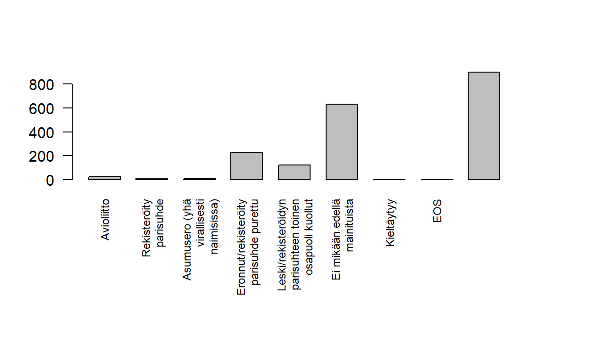
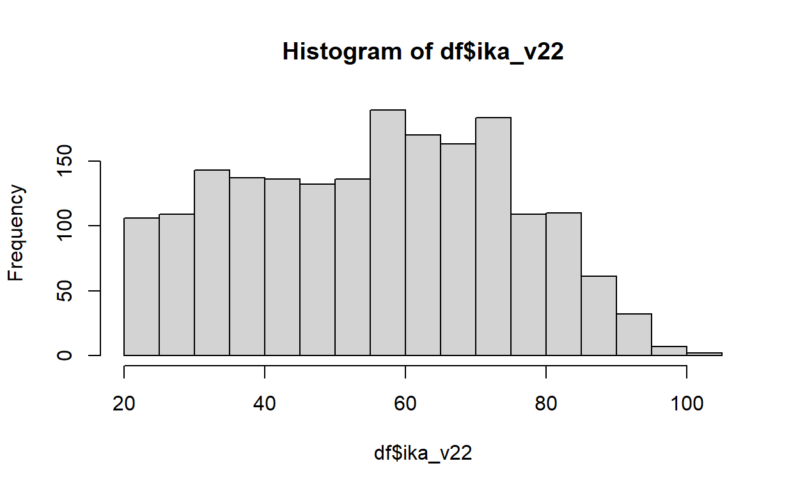
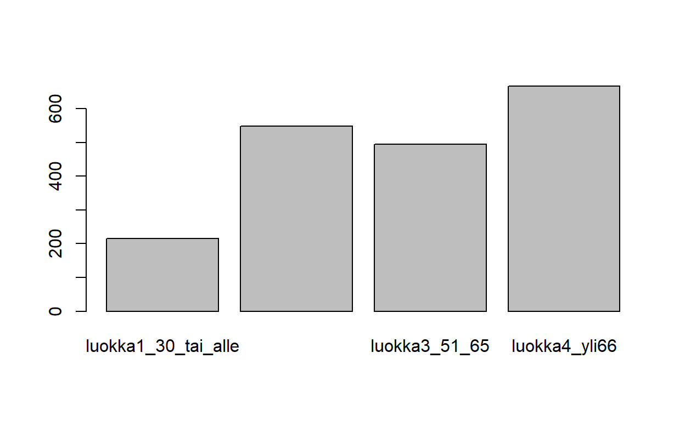

| Osa | Käsiteltävät asiat (viitteellinen asiasisältö, muutoksia voi tulla) |
| 1 | RStudioon ja R-kieleen tutustuminen |
| 2 | Aineiston kuvailu: frekvenssijakauma, tunnusluvut, kuviot, osa-aineiston poimiminen ja aineston ryhmittäinen tarkastelu |
| 3 | Yksinkertaiset muuttujamuunnokset, kahden muuttujan välinen yhteisvaihtelu, ristiintaulukointi |
| 4 | Korrelaatiot ja hajotakuvio, summamuuttujan tekeminen |
| 5 | Keskiarvotestit: t-testi ja ANOVA |
| 6 | Kertausta ja ohjausta ryhmätehtävään |
# Asennetaan "memisc"-niminen paketti
install.packages('memisc')
# Otetaan käyttöön kyseinen paketti
library(memisc)
# Ladataan aineisto R:ään, korjaa polku tiedostoon oikeaksi eli
# laita "D:/data.por" tilalle se tiedostopolku, johon talletit datan
ds <- as.data.set(spss.portable.file("D:/data.por"))
# Muutetaan heti useammin käytettyyn dataframe-muotoon
df <- as.data.frame(ds)Here’s a simple exercise with an empty code chunk provided for entering the answer.
Write the R code required to add two plus two:
Here’s an exercise with some prepopulated code as well as
exercise.lines = 5 to provide a bit more initial room to
work.
Now write a function that adds any two numbers and then call it:
add <- function() {
}| Osa | Käsiteltävät asiat (viitteellinen asiasisältö, muutoksia voi tulla) |
| 1 | RStudioon ja R-kieleen tutustuminen |
| 2 | Aineiston kuvailu: frekvenssijakauma, tunnusluvut, kuviot, osa-aineiston poimiminen ja aineston ryhmittäinen tarkastelu |
| 3 | Yksinkertaiset muuttujamuunnokset, kahden muuttujan välinen yhteisvaihtelu, ristiintaulukointi |
| 4 | Korrelaatiot ja hajotakuvio, summamuuttujan tekeminen |
| 5 | Keskiarvotestit: t-testi ja ANOVA |
| 6 | Kertausta ja ohjausta ryhmätehtävään |
Muuttujan frekvenssijakaumaa voi tutkia funktiolla table. Prosenttijakauman saa näkymään funktiolla prop.table, jolle annetaan argumentiksi table-objekti.
frekvenssitaulu <- table(df$F11, useNA = "always")
frekvenssitaulu##
## Avioliitto
## 24
## Rekisteröity parisuhde
## 11
## Asumusero (yhä virallisesti naimisissa)
## 7
## Eronnut/rekisteröity parisuhde purettu
## 230
## Leski/rekisteröidyn parisuhteen toinen osapuoli kuollut
## 122
## Ei mikään edellä mainituista
## 630
## Kieltäytyy
## 0
## EOS
## 2
## <NA>
## 899prop.table(frekvenssitaulu)##
## Avioliitto
## 0.012467532
## Rekisteröity parisuhde
## 0.005714286
## Asumusero (yhä virallisesti naimisissa)
## 0.003636364
## Eronnut/rekisteröity parisuhde purettu
## 0.119480519
## Leski/rekisteröidyn parisuhteen toinen osapuoli kuollut
## 0.063376623
## Ei mikään edellä mainituista
## 0.327272727
## Kieltäytyy
## 0.000000000
## EOS
## 0.001038961
## <NA>
## 0.467012987# Muutetaan kuvan marginaaleja
par(mar=c(10, 4, 4, 4))
# Jaetaan merkkijonot useammalle riville, niin näkyvät paremmin kuvassa
levels(df$F11) <- str_wrap(levels(df$F11), 20)
frekvenssitaulu <- table(df$F11, useNA = "always")
# las-parametri vaihtaa x-akselin labeleiden suunnan, space-parametrilla muutetaan
# pylväiden etäisyyksiä, cex.names-parametrilla muutetaan x-akselin tekstin kokoa
barplot(frekvenssitaulu, las = 2, space = c(0.5), cex.names = 0.75)
Here’s an exercise where the chunk is pre-evaulated via the
exercise.eval option (so the user can see the default
output we’d like them to customize). We also add a “hint” to the correct
solution via the chunk immediate below labeled
print-limit-hint.
Modify the following code to limit the number of rows printed to 5:
mtcarshead(mtcars)You can include any number of single or multiple choice questions
as a quiz. Use the question function to define a question
and the quiz function for grouping multiple questions
together.
Some questions to verify that you understand the purposes of various base and recommended R packages:
| Osa | Käsiteltävät asiat (viitteellinen asiasisältö, muutoksia voi tulla) |
| 1 | RStudioon ja R-kieleen tutustuminen |
| 2 | Aineiston kuvailu: frekvenssijakauma, tunnusluvut, kuviot, osa-aineiston poimiminen ja aineston ryhmittäinen tarkastelu |
| 3 | Yksinkertaiset muuttujamuunnokset, kahden muuttujan välinen yhteisvaihtelu, ristiintaulukointi |
| 4 | Korrelaatiot ja hajotakuvio, summamuuttujan tekeminen |
| 5 | Keskiarvotestit: t-testi ja ANOVA |
| 6 | Kertausta ja ohjausta ryhmätehtävään |
Uudelleenluokitellaan muuttuja C7.
library(tidyverse)
# Varmistetaan, että muuttuja C7 on luokaltaan faktori
class(df$C7)## [1] "factor"# Muuttujan frekvenssijakauma
table(df$C7, useNA = "always")##
## Erittäin hyvä Hyvä Kohtuullinen Huono Erittäin huono
## 423 895 519 76 10
## Kieltäytyy EOS <NA>
## 1 1 0# Tehdään aineistoon kopio muuttujasta C7 ja asetetaan sen nimeksi terveys
df$terveys <- df$C7
# Tutkitaan funktion levels-avulla faktorin tasoja
levels(df$terveys)## [1] "Erittäin hyvä" "Hyvä" "Kohtuullinen" "Huono"
## [5] "Erittäin huono" "Kieltäytyy" "EOS"# Yhdistetään luokat Huono ja Erittäin huono
levels(df$terveys)[c(4, 5)] <- "Huono tai erittäin huono"
table(df$terveys, useNA = "always")##
## Erittäin hyvä Hyvä Kohtuullinen
## 423 895 519
## Huono tai erittäin huono Kieltäytyy EOS
## 86 1 1
## <NA>
## 0Muodostetaan kurssin harjoitusainestoon ikämuuttuja, joka kertoo henkilön iän vuonna 2022.
df$ika_v22 <- 2022 - df$F3_1## Min. 1st Qu. Median Mean 3rd Qu. Max.
## 21.00 40.00 57.00 55.94 71.00 104.00
Luokitellaan juuri luotu ikämuuttuja neljään luokkaan.
# Käytetään cut-funktiota tähän
# Kts. ?cut
df$ika_kategorinen <- cut(df$ika_v22, breaks = c(0, 30, 50, 65, Inf), labels = c("luokka1_30_tai_alle", "luokka2_31_50", "luokka3_51_65", "luokka4_yli66"), include.lowest = TRUE)
# Piirretään kuvaaja
plot(df$ika_kategorinen)
# Frekvenssijakauma
table(df$ika_kategorinen)##
## luokka1_30_tai_alle luokka2_31_50 luokka3_51_65 luokka4_yli66
## 215 548 495 667prop.table(table(df$ika_kategorinen))##
## luokka1_30_tai_alle luokka2_31_50 luokka3_51_65 luokka4_yli66
## 0.1116883 0.2846753 0.2571429 0.3464935Tarkastellaan,o onko miesten ja naisten välillä eroa sen suhteen, mikä on korkein koulutus, jonka vastaaja on suorittanut
koul_sp <- table(df$F15, df$F2_1)
koul_sp##
## Mies Nainen
## Vähemmän kuin peruskoulun ala-aste tai vähemmän kuin kansakoulu 13 10
## Peruskoulun ala-aste, kansakoulu tai kansalaiskoulu 95 98
## Peruskoulun yläaste tai keskikoulu 82 84
## Lukio, ylioppilastutkinto 59 60
## Ammatillinen perustutkinto, ammattitutkinto 285 223
## Sekä ylioppilas- että ammattitutkinto 32 37
## Erikoisammattitutkinto 32 13
## Ammatillinen opistoasteen tutkinto 113 109
## Amm.kork.koulu tai amm. korkea-asteen tutkinto 77 108
## Alempi korkeakoulututkinto, kandidaatin tutkinto 34 77
## Ylempi ammattikorkeakoulututkinto 13 22
## Ylempi korkeakoulututkinto 110 106
## Lisensiaatin tutkinto 5 9
## Tohtorin tutkinto 8 7
## Joku muu 2 0
## Kieltäytyy 0 0
## EOS 1 1# Huom. margin-argumentin arvo 2, jonka avulla lasketaan koulutuksen prosentuaalinen
# jakautuminen sukupuolittain
# ?prop.table
prop.table(koul_sp, margin = 2)##
## Mies
## Vähemmän kuin peruskoulun ala-aste tai vähemmän kuin kansakoulu 0.013527575
## Peruskoulun ala-aste, kansakoulu tai kansalaiskoulu 0.098855359
## Peruskoulun yläaste tai keskikoulu 0.085327784
## Lukio, ylioppilastutkinto 0.061394381
## Ammatillinen perustutkinto, ammattitutkinto 0.296566077
## Sekä ylioppilas- että ammattitutkinto 0.033298647
## Erikoisammattitutkinto 0.033298647
## Ammatillinen opistoasteen tutkinto 0.117585848
## Amm.kork.koulu tai amm. korkea-asteen tutkinto 0.080124870
## Alempi korkeakoulututkinto, kandidaatin tutkinto 0.035379813
## Ylempi ammattikorkeakoulututkinto 0.013527575
## Ylempi korkeakoulututkinto 0.114464100
## Lisensiaatin tutkinto 0.005202914
## Tohtorin tutkinto 0.008324662
## Joku muu 0.002081165
## Kieltäytyy 0.000000000
## EOS 0.001040583
##
## Nainen
## Vähemmän kuin peruskoulun ala-aste tai vähemmän kuin kansakoulu 0.010373444
## Peruskoulun ala-aste, kansakoulu tai kansalaiskoulu 0.101659751
## Peruskoulun yläaste tai keskikoulu 0.087136929
## Lukio, ylioppilastutkinto 0.062240664
## Ammatillinen perustutkinto, ammattitutkinto 0.231327801
## Sekä ylioppilas- että ammattitutkinto 0.038381743
## Erikoisammattitutkinto 0.013485477
## Ammatillinen opistoasteen tutkinto 0.113070539
## Amm.kork.koulu tai amm. korkea-asteen tutkinto 0.112033195
## Alempi korkeakoulututkinto, kandidaatin tutkinto 0.079875519
## Ylempi ammattikorkeakoulututkinto 0.022821577
## Ylempi korkeakoulututkinto 0.109958506
## Lisensiaatin tutkinto 0.009336100
## Tohtorin tutkinto 0.007261411
## Joku muu 0.000000000
## Kieltäytyy 0.000000000
## EOS 0.001037344# Koulutus muuttujan frekvenssijakauma - onko syytä yhdistellä luokkia?
table(df$F15, useNA = "always")##
## Vähemmän kuin peruskoulun ala-aste tai vähemmän kuin kansakoulu
## 23
## Peruskoulun ala-aste, kansakoulu tai kansalaiskoulu
## 193
## Peruskoulun yläaste tai keskikoulu
## 166
## Lukio, ylioppilastutkinto
## 119
## Ammatillinen perustutkinto, ammattitutkinto
## 508
## Sekä ylioppilas- että ammattitutkinto
## 69
## Erikoisammattitutkinto
## 45
## Ammatillinen opistoasteen tutkinto
## 222
## Amm.kork.koulu tai amm. korkea-asteen tutkinto
## 185
## Alempi korkeakoulututkinto, kandidaatin tutkinto
## 111
## Ylempi ammattikorkeakoulututkinto
## 35
## Ylempi korkeakoulututkinto
## 216
## Lisensiaatin tutkinto
## 14
## Tohtorin tutkinto
## 15
## Joku muu
## 2
## Kieltäytyy
## 0
## EOS
## 2
## <NA>
## 0# Tehdään uusi koulutus-muuttuja, jossa luokkia on yhdistelty
df$koulutus <- df$F15
# Luokitellaan uudelleen
levels(df$koulutus) <- c("Perusaste", "Perusaste", "Perusaste",
"Toinen_aste","Toinen_aste", "Toinen_aste","Toinen_aste", "Toinen_aste",
"Alempi_korkea", "Alempi_korkea",
"Ylempi_korkea","Ylempi_korkea",
"Lisensiaatti_tohtori", "Lisensiaatti_tohtori",
NA, NA, NA)
# Uuden koulutusmuuttujan ja sukupuolen ristiintaulkointi
uusi_koul_sp <- table(df$koulutus, df$F2_1)
prop.table(uusi_koul_sp, 2)##
## Mies Nainen
## Perusaste 0.19832985 0.19937695
## Toinen_aste 0.54384134 0.45898235
## Alempi_korkea 0.11586639 0.19210800
## Ylempi_korkea 0.12839248 0.13291796
## Lisensiaatti_tohtori 0.01356994 0.01661475table(df$C6)##
## Erittäin turvalliseksi Turvalliseksi Turvattomaksi
## 845 918 136
## Erittäin turvattomaksi Kieltäytyy EOS
## 20 0 6# Tiputetaan tässä vaiheessa pois faktoritaso "Kieltäytyy", koska siinä ei ole havaintoja
levels(df$C6)[5] <- NA
turv_sp <- table(df$C6, df$F2_1)
# Tehdään khiin neliötesi
chisq.test(turv_sp)## Warning in chisq.test(turv_sp): Chi-squared approximation may be incorrect##
## Pearson's Chi-squared test
##
## data: turv_sp
## X-squared = 185.13, df = 4, p-value < 2.2e-16# Huomaa varoitus
# Poistetaan myös luokka EOS
levels(df$C6)[5] <- NA
turv_sp <- table(df$C6, df$F2_1)
prop.table(turv_sp, 2)##
## Mies Nainen
## Erittäin turvalliseksi 0.578125000 0.302398332
## Turvalliseksi 0.395833333 0.561001043
## Turvattomaksi 0.021875000 0.119916580
## Erittäin turvattomaksi 0.004166667 0.016684046# Tehdään testi uudestaan
chisq.test(turv_sp)##
## Pearson's Chi-squared test
##
## data: turv_sp
## X-squared = 182.47, df = 3, p-value < 2.2e-16